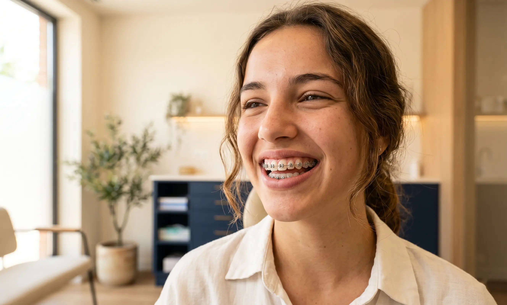
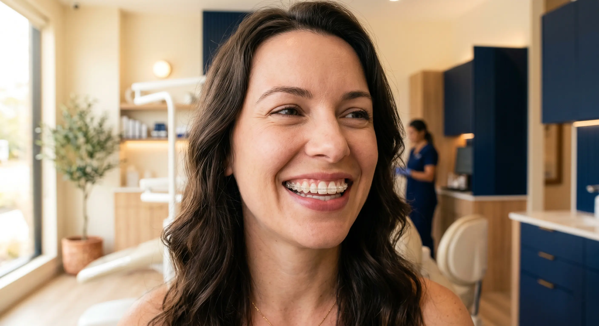

Brackets Metálicos
La opción más eficaz y económica. Los brackets metálicos actuales son mucho más pequeños y cómodos que los de generaciones anteriores. Ideales para correcciones complejas en niños y adolescentes.
Desde 50 €/mes
Brackets tradicionales o alineadores invisibles. Tratamiento personalizado con nuestro ortodoncista especialista. Desde 50 €/mes todo incluido. Para niños, adolescentes y adultos.
Estudiamos tu caso y te recomendamos la opción más efectiva según tu maloclusión, edad y preferencias estéticas.

La opción más eficaz y económica. Los brackets metálicos actuales son mucho más pequeños y cómodos que los de generaciones anteriores. Ideales para correcciones complejas en niños y adolescentes.

Brackets de cerámica o zafiro de color blanco o transparente que se mimetizan con el esmalte dental. La alternativa estética a los brackets metálicos con la misma eficacia clínica.
Férulas transparentes removibles que enderezan los dientes de forma casi imperceptible. Ideales para adultos que buscan discreción. Puedes comer y cepillarte con total normalidad.
* Los precios son orientativos. El presupuesto definitivo se entrega tras el estudio ortodóncico gratuito.
Nunca es demasiado tarde para tener la sonrisa que siempre quisiste. Cada edad tiene el tratamiento más adecuado.
La ortodoncia interceptiva en dentición mixta puede evitar tratamientos más complejos en el futuro. Revisamos el desarrollo dental desde los 6 años.
La edad de oro de la ortodoncia. Con los brackets adecuados conseguimos resultados excelentes en el menor tiempo posible.
Los alineadores invisibles y los brackets de zafiro hacen que la ortodoncia sea totalmente compatible con la vida profesional y social del adulto.
Reserva tu primera visita sin compromiso. Nuestro ortodoncista evaluará tu caso y te presentará el plan de tratamiento con presupuesto detallado, sin coste.